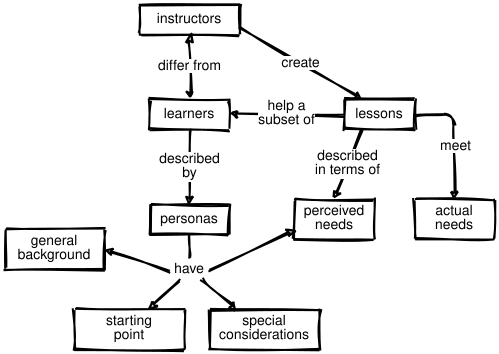

6 A Lesson Design Process
Most people design lessons like this:
Someone asks you to teach something you barely know or haven’t thought about in years.
You start writing slides to explain what you know about the subject.
After 2 or 3 weeks, you make up an assignment based on what you’ve taught so far.
You repeat step 3 several times.
You stay awake into the wee hours of the morning to create a final exam and promise yourself that you’ll be more organized next time.
A more effective method is similar in spirit to a programming practice called test-driven development (TDD). Programmers who use TDD don’t write software and then test that it is working correctly. Instead, they write the tests first, then write just enough new software to make those tests pass.
TDD works because writing tests forces programmers to be precise about what they’re trying to accomplish and what “done” looks like. TDD also prevents endless polishing: when the tests pass, you stop coding. Finally, it reduces the risk of confirmation bias: someone who hasn’t yet written a piece of software will be more objective than someone who has just put in several hours of hard work and really, really wants to be done.
A similar method called backward design works very well for lesson design. This method was developed independently in Fink (2013) and is summarized in (McTighe and Wiggins 2013). In simplified form, its steps are:
Create or recycle learner personas (discussed in the next section) to figure out who you are trying to help and what will appeal to them.
Brainstorm to get a rough idea of what you want to cover, how you’re going to do it, what problems or misconceptions you expect to encounter, what’s not going to be included, and so on. Drawing concept maps can help a lot at this stage (Section 3.1).
Create a summative assessment (Section 2.1) to define your overall goal. This can be the final exam for a course or the capstone project for a one-day workshop; regardless of its form or size, it shows how far you hope to get more clearly than a point-form list of objectives.
Create formative assessments that will give people a chance to practice the things they’re learning. These will also tell you (and them) whether they’re making progress and where they need to focus their attention. The best way to do this is to itemize the knowledge and skills used in the summative assessment you developed in the previous step and then create at least one formative assessment for each.
Order the formative assessments to create a course outline based on their complexity, their dependencies, and how well topics will motivate your learners (Section 10.1).
Write material to get learners from one formative assessment to the next. Each hour of instruction should consist of three to five such episodes.
Write a summary description of the course to help its intended audience find it and figure out whether it’s right for them.
This method helps keep teaching focused on its objectives. It also ensures that learners don’t face anything at the end of the course that they are not prepared for.
Backward design is not the same thing as teaching to the test. When using backward design, teachers set goals to aid in lesson design; they may never actually give the final exam that they wrote. In many school systems, on the other hand, an external authority defines assessment criteria for all learners, regardless of their individual situations. The outcomes of those summative assessments directly affect the teachers’ pay and promotion, which means teachers have an incentive to focus on having learners pass tests rather than on helping them learn.
(Green 2014) argues that focusing on testing and measurement appeals to those with the power to set the tests, but is unlikely to improve outcomes unless it is coupled with support for teachers to make improvements based on test outcomes. The latter is often missing because large organizations usually value uniformity over productivity (Scott 1998).
Reverse design is described as a sequence, but it’s almost never done that way. We may, for example, change our mind about what we want to teach based on something that occurs to us while we’re writing an MCQ, or re-assess who we’re trying to help once we have a lesson outline. However, the notes we leave behind should present things in the order described above so that whoever has to use or maintain the lesson after us can retrace our thinking (Parnas and Clements 1986).
6.1 Learner Personas
The first step in the reverse design process is figuring out who your audience is. One way to do this is to write two or three learner personas like those in Section 1.1. This technique is borrowed from user experience designers, who create short profiles of typical users to help them think about their audience.
A learner persona consists of:
the person’s general background;
what they already know;
what they want to do; and
any special needs they have.
The personas in Section 1.1 have the four points listed above, along with a short summary of how this book will help them. A learner persona for a volunteer group that runs weekend Python workshops might be:
Jorge just moved from Costa Rica to Canada to study agricultural engineering. He has joined the college soccer team and is looking forward to learning how to play ice hockey.
Other than using Excel, Word, and the internet, Jorge’s most significant previous experience with computers is helping his sister build a WordPress site for the family business back home.
Jorge wants to measure properties of soil from nearby farms using a handheld device that sends data to his computer. Right now he has to open each data file in Excel, delete the first and last column, and calculate some statistics on what’s left. He has to collect at least 600 measurements in the next few months, and really doesn’t want to have to do these steps by hand for each one.
Jorge can read English well, but sometimes struggles to keep up with spoken conversation that involves a lot of jargon.
Rather than writing new personas for every lesson or course, teachers usually create and share half a dozen that cover everyone they are likely to teach, then pick a few from that set to describe the audience for particular material. Personas that are used this way become a convenient shorthand for design issues: when speaking with each other, teachers can say, “Would Jorge understand why we’re doing this?” or, “What installation problems would Jorge face?”
Personas should always describe what the learner wants to do rather than what you think they actually need. Ask yourself what they are searching for online; it probably won’t include jargon that they don’t yet know, so part of what you have to do as an instructional designer is figure out how to make your lesson findable.
6.2 Learning Objectives
Formative and summative assessments help teachers figure out what they’re going to teach, but in order to communicate that to learners and other teachers, a course description should also have learning objectives. These help ensure that everyone has the same understanding of what a lesson is supposed to accomplish. For example, a statement like “understand Git” could mean any of the following:
Learners can describe three ways in which version control systems like Git are better than file-sharing tools like Dropbox and two ways in which they are worse.
Learners can commit a changed file to a Git repository using a desktop GUI tool.
Learners can explain what a detached HEAD is and recover from it using command-line operations.
A learning objective is what a lesson strives to achieve. A learning outcome is what it actually achieves, i.e. what learners actually take away. The role of summative assessment is therefore to compare learning outcomes with learning objectives.
A learning objective describes how the learner will demonstrate what they have learned once they have successfully completed a lesson. More specifically, it has a measurable or verifiable verb that states what the learner will do and specifies the criteria for acceptable performance. Writing these may initially seem restrictive, but they will make you, your fellow teachers, and your learners happier in the long run: you will end up with clear guidelines for both your teaching and assessment, and your learners will appreciate having clear expectations.
One way to understand what makes for a good learning objective is to see how a poor one can be improved:
- The learner will be given opportunities to learn good programming practices.
- This describes the lesson’s content, not the attributes of successful learners.
- The learner will have a better appreciation for good programming practices.
- This doesn’t start with an active verb or define the level of learning, and the subject of learning has no context and is not specific.
- The learner will understand how to program in R.
- While this starts with an active verb, it doesn’t define the level of learning and the subject of learning is still too vague for assessment.
- The learner will write one-page data analysis scripts to read, filter, and summarize tabular data using R.
- This starts with an active verb, defines the level of learning, and provides context to ensure that outcomes can be assessed.
When it comes to choosing verbs, many teachers use Bloom's Taxonomy. First published in 1956 and updated at the turn of the century (Anderson and Krathwohl 2001), it is a widely used framework for discussing levels of understanding. Its most recent form has six categories; the list below gives a few of the verbs typically used in learning objectives written for each:
- Remembering
- Exhibit memory of previously learned material by recalling facts, terms, basic concepts, and answers. (recognize, list, describe, name, find)
- Understanding
- Demonstrate understanding of facts and ideas by organizing, comparing, translating, interpreting, giving descriptions, and stating main ideas. (interpret, summarize, paraphrase, classify, explain)
- Applying
- Solve new problems by applying acquired knowledge, facts, techniques and rules in a different way. (build, identify, use, plan, select)
- Analyzing
- Examine and break information into parts by identifying motives or causes; make inferences and find evidence to support generalizations. (compare, contrast, simplify)
- Evaluating
- Present and defend opinions by making judgments about information, validity of ideas, or quality of work based on a set of criteria. (check, choose, critique, prove, rate)
- Creating
- Compile information together in a different way by combining elements in a new pattern or proposing alternative solutions. (design, construct, improve, adapt, maximize, solve)
Bloom’s Taxonomy appears in almost every textbook on education, but (Masapanta-Carrión and Velázquez-Iturbide 2018) found that even experienced educators have trouble agreeing on how to classify specific things. The verbs are still useful, though, as is the notion of building understanding in steps: as Daniel Willingham has said, people can’t think without something to think about (Willingham 2010), and this taxonomy can help teachers ensure that learners have those somethings when they need them.
Another way to think about learning objectives comes from (Fink 2013), which defines learning in terms of the change it is meant to produce in the learner. Fink's Taxonomy also has six categories, but unlike Bloom’s they are complementary rather than hierarchical:
- Foundational Knowledge
- understanding and remembering information and ideas. (remember, understand, identify)
- Application
- skills, critical thinking, managing projects. (use, solve, calculate, create)
- Integration
- connecting ideas, learning experiences, and real life. (connect, relate, compare)
- Human Dimension
- learning about oneself and others. (come to see themselves as, understand others in terms of, decide to become)
- Caring
- developing new feelings, interests, and values. (get excited about, be ready to, value)
- Learning How to Learn
- becoming a better learner. (identify source of information for, frame useful questions about)
A set of learning objectives based on this taxonomy for an introductory course on HTML and CSS might be:
Explain what CSS properties are and how CSS selectors work.
Style a web page using common tags and CSS properties.
Compare and contrast writing HTML and CSS to writing with desktop publishing tools.
Identify and correct issues in sample web pages that would make them difficult for the visually impaired to interact with.
Describe features of favorite web sites whose design particularly appeals to you and explain why.
Describe your two favorite online sources of information about CSS and explain what you like about them.
6.3 Maintainability
Once a lesson has been created someone needs to maintain it, and doing that is a lot easier if it has been built in a maintainable way. But what exactly does “maintainable” mean? The short answer is that a lesson is maintainable if it’s cheaper to update it than to replace it. This equation depends on four factors:
- How well documented the course’s design is.
- If the person doing maintenance doesn’t know (or doesn’t remember) what the lesson is supposed to accomplish or why topics are introduced in a particular order, it will take them more time to update it. One reason to use reverse design is to capture decisions about why each course is the way it is.
- How easy it is for collaborators to collaborate technically.
- Teachers usually share material by mailing PowerPoint files to each other or by putting them in a shared drive. Collaborative writing tools like Google Docs and wikis are a big improvement, as they allow many people to update the same document and comment on other people’s updates. The version control systems used by programmers, such as GitHub, are another approach. They let any number of people work independently and then merge their changes in a controlled, reviewable way. Unfortunately, version control systems have a steep learning curve and don’t handle common office document formats.
- How willing people are to collaborate.
- The tools needed to build a Wikipedia for lessons have been around for twenty years, but most teachers still don’t write and share lessons the way that they write and share encyclopedia entries.
- How useful sharing actually is.
- The Reusability Paradox states that the more reusable a learning object is, the less pedagogically effective it is (Wiley 2002). The reason is that a good lesson resembles a novel more than it does a program: its parts are tightly coupled rather than independent black boxes. Direct re-use may therefore be the wrong goal for lessons; we might get further by trying to make them easier to remix.
If the Reusability Paradox is true, collaboration will be more likely if the things being collaborated on are small. This fits well with Mike Caulfield’s theory of choral explanations, which argues that sites like Stack Overflow succeed because they provide a chorus of answers for every question, each of which is most suitable for a slightly different questioner. If this is right, the lessons of tomorrow may be guided tours of community-curated Q&A repositories designed for learners at widely different levels.
6.4 Exercises
6.4.1 Create Learner Personas (small groups/30 min)
Working in small groups, create a 4-point persona that describes one of your typical learners.
6.4.2 Classify Learning Objectives (pairs/10 min)
Look at the example learning objectives for an introductory course on HTML and CSS in Section 6.2 and classify each according to Bloom’s Taxonomy. Compare your answers with those of your partner. Where did you agree and disagree?
6.4.3 Write Learning Objectives (pairs/20 min)
Write one or more learning objectives for something you currently teach or plan to teach using Bloom’s Taxonomy. Working with a partner, critique and improve the objectives. Does each one have a verifiable verb and clearly state criteria for acceptable performance?
6.4.4 Write More Learning Objectives (pairs/20 min)
Write one or more learning objectives for something you currently teach or plan to teach using Fink’s Taxonomy. Working with a partner, critique and improve the objectives.
6.4.5 Help Me Do It By Myself (small groups/15 min)
The educational theorist Lev Vygotsky introduced the notion of a Zone of Proximal Development (ZPD), which includes the problems that people cannot yet solve on their own but are able to solve with help from a mentor. These are the problems that are most fruitful to tackle next, as they are out of reach but attainable.
Working in small groups, choose one learner persona you have developed and describe two or three problems that are in that learner’s ZPD.
6.4.6 Building Lessons by Subtracting Complexity (individual/20 min)
One way to build a programming lesson is to write the program you want learners to finish with, then remove the most complex part that you want them to write and make it the last exercise. You can then remove the next most complex part you want them to write and make it the penultimate exercise, and so on. Anything that’s left after you have pulled out the exercises, such as loading libraries or reading data, becomes the starter code that you give them.
Take a program or web page that you want your learners to be able to create and work backward to break it into digestible parts. How many are there? What key idea is introduced by each one?
6.4.7 Inessential Weirdness (individual/15 min)
Betsy Leondar-Wright coined the phrase “inessential weirdness” to describe things groups do that aren’t really necessary, but which alienate people who aren’t yet members of that group. Sumana Harihareswara later used this notion as the basis for a talk on inessential weirdnesses in open source software, which includes things like using command-line tools with cryptic names. Take a few minutes to read these articles, then make a list of inessential weirdnesses you think your learners might encounter when you first teach them. How many of these can you avoid?
6.4.8 PETE (individual/15 min)
One pattern that works well for programming lessons is PETE: introduce the Problem, work through an Example, explain the Theory, and then Elaborate on a second example so that learners can see what is specific to each case and what applies to all cases. Pick something you have recently taught or been taught and outline a short lesson for it that follows these four steps.
6.4.9 PRIMM (individual/15 min)
Another lesson pattern is PRIMM (Sentance et al. 2019): Predict a program’s behavior or output, Run it to see what it actually does, Investigate why it does that by stepping through it in a debugger or drawing the flow of control, Modify it (or its inputs), and then Make something similar from scratch. Pick something you have recently taught or been taught and outline a short lesson for it that follows these five steps.
6.4.10 Concrete-Representational-Abstract (pairs/15 min)
Concrete-Representational-Abstract (CRA) is an approach to introducing new ideas that is used primarily with younger learners: physically manipulate a Concrete object, Represent the object with an image, then perform the same operations using numbers, symbols, or some other Abstraction.
Write each of the numbers 2, 7, 5, 10, 6 on a sticky note.
Simulate a loop that finds the largest value by looking at each in turn (concrete).
Sketch a diagram of the process you used, labeling each step (representational).
Write instructions that someone else could follow to go through the same steps (abstract).
Compare your representational and abstract materials with your partner’s.
6.4.11 Evaluating a Lesson Repository (small groups/10 min)
(Leake and Lewis 2017) explores why computer science teachers don’t use lesson sharing sites and recommends ways to make them more appealing:
The landing page should allow site visitors to identify their background and their interests in visiting the site. Sites should ask two questions: “What is your current role?” and “What course and grade level are you interested in?”
Sites should display all learning resources in the context of the full course so that potential users can understand their intended context of use.
Many teachers have concerns about having their (lack of) knowledge judged by their peers if they post to sites’ discussion forums. These forums should therefore allow anonymous posting.
In small groups, discuss whether these three features would be enough to convince you to use a lesson sharing site, and if not, what would.
Review
